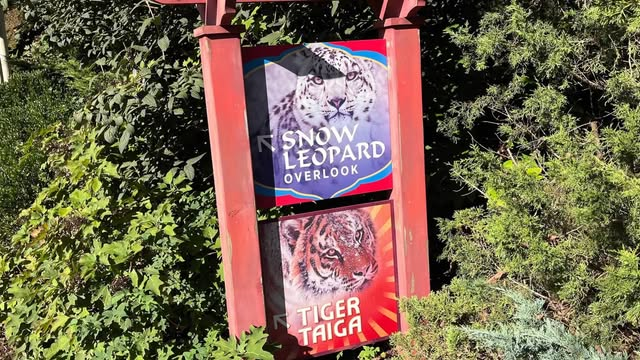

Tiger Taiga & Snow Leopard Pass
Louisville Zoo · Photo Tour #33
I walked from Tiger Taiga to Snow Leopard Pass at Louisville Zoo, starting with the signs, the Amur tiger mural, and the Why Tigers Matter panel. I spent time with the tiger family, parents Victoria and Timmy and cubs Frankie, Mira and Masha, then crossed to Snow Leopard Pass, where I found one snow leopard asleep and another walking the mesh walkway overhead.

I walked through Tiger Taiga and Snow Leopard Pass at Louisville Zoo. I started with the signs — Snow Leopard Overlook one way, the Alice S. Etscorn Tiger Taiga the other — a painted Amur tiger mural, and the panel "Why Tigers Matter."
The tigers are a family: parents Victoria and Timmy, and cubs Frankie, Mira and Masha. I watched an adult grooming a cub, two cubs resting together, and a cub chewing a stick. I also stopped at a second panel, "Tigers on the Edge of Extinction," which maps how far their numbers have fallen.
Then I crossed to Snow Leopard Pass, in through the prayer wheels. I found one snow leopard asleep, and another walking the elevated mesh walkway overhead.
I posted this on Facebook — open the original post →